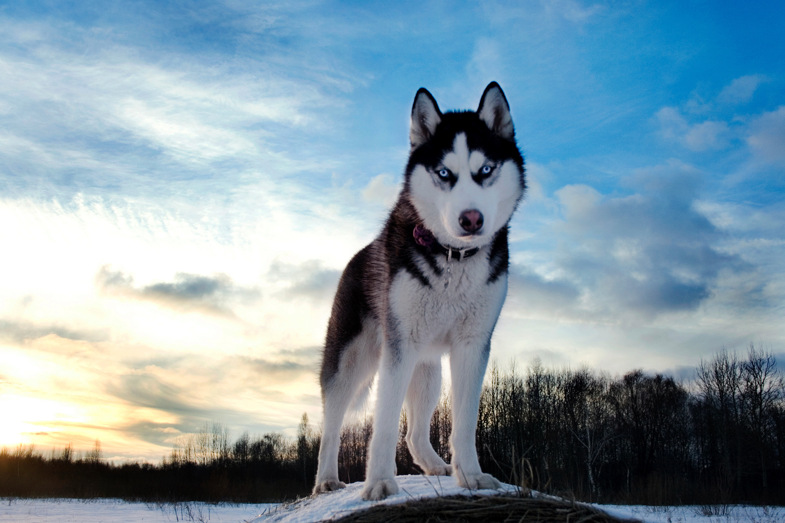
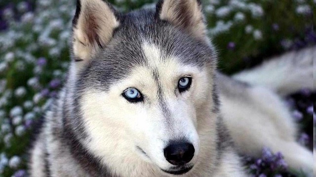

ИСТОРИЯ
Сибирский хаски — заводская специализированная порода собак, выведенная чукчами
северо-восточной части Сибири и зарегистрированная американскими кинологами в 1930-х годах
как ездовая собака, полученная от аборигенных собак Дальнего Востока России, в основном из Анадыря,
Колымы, Камчатки у местных оседлых приморских племён — юкагиров, кереков, азиатских эскимосов
и приморских чукчей — анкальын (приморские, поморы — от анкы (море))[1].
Эта аборигенная ездовая собака Дальнего Востока является одной из древнейших пород собак.
В настоящее время выведенная порода «сибирский хаски» используется не только как ездовая,
но и как собака-компаньон и шоу-выставочная собака и собака поводырь.

Термин «хаски» (искаженное «эски») изначально обозначал эскимосов.
Впоследствии это название закрепилось за эскимосским хаски. Это собаки с густой шерстью,
острой мордой со стоячими ушами и прямым хвостом. Когда первые представители чукотских
собак прибыли в Северную Америку, для отличия от эскимосских хаски их стали называть сибирскими хаски,
и это название сохранилось за ними по сей день.